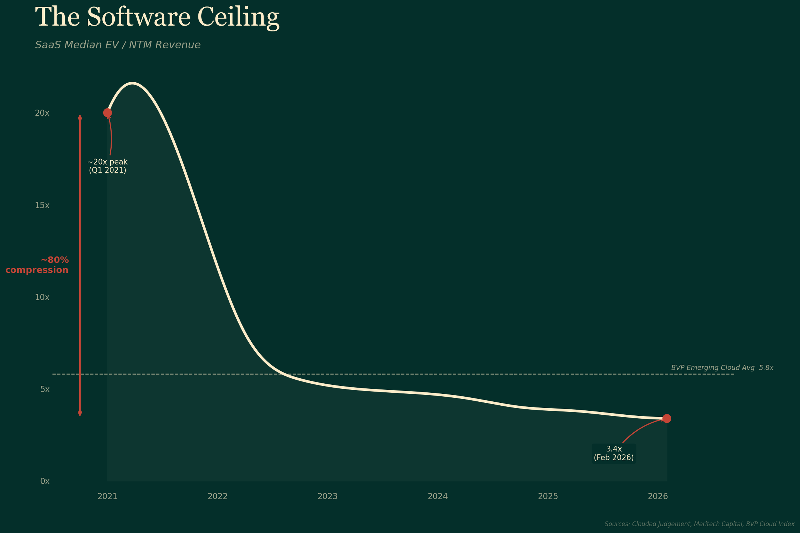
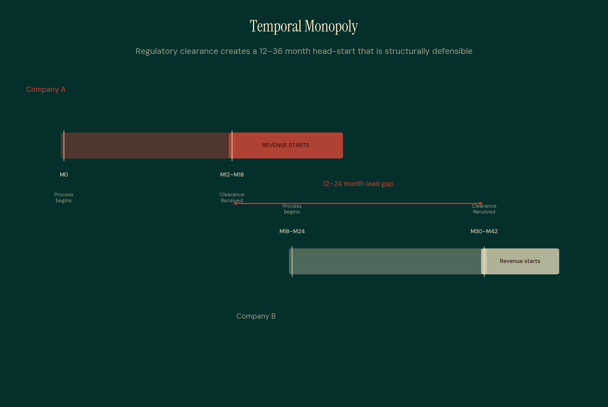
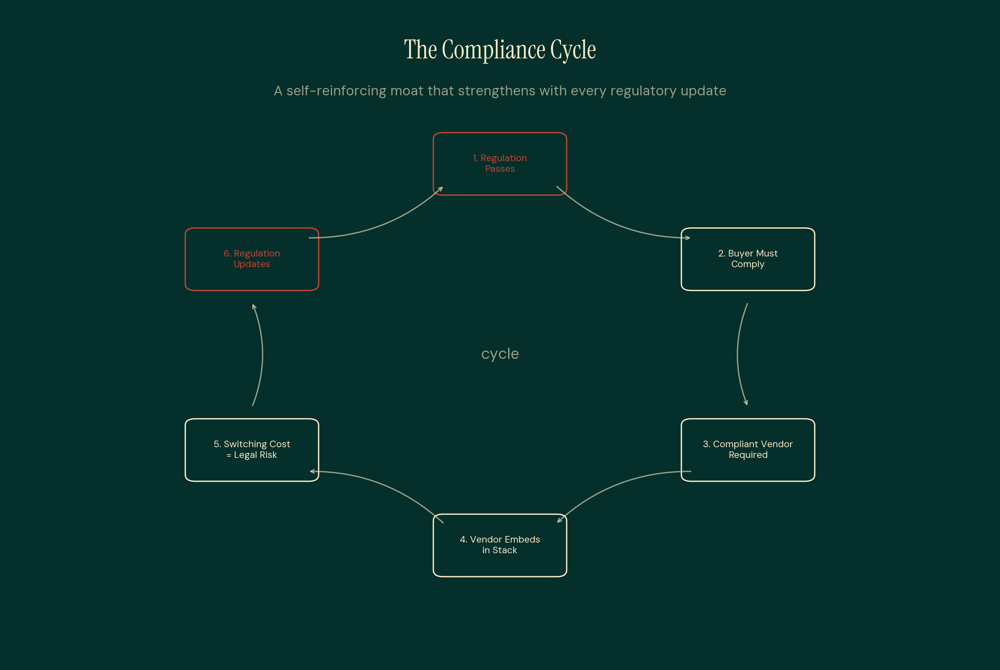
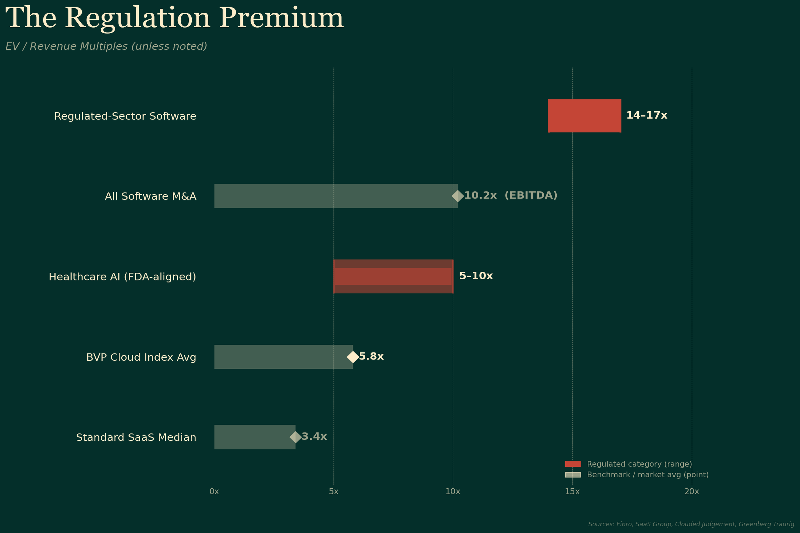
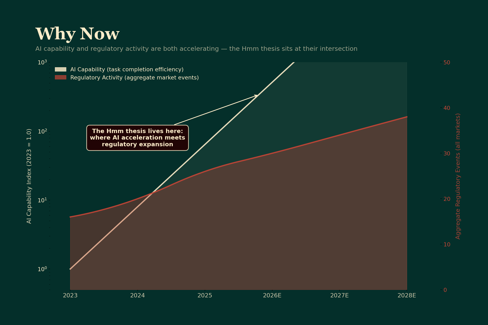
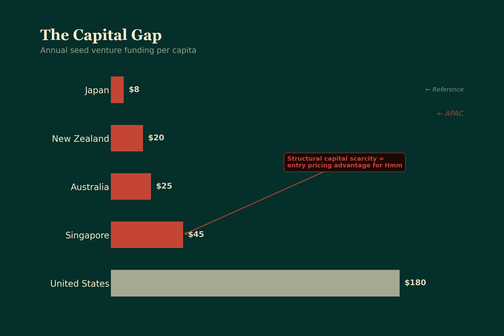
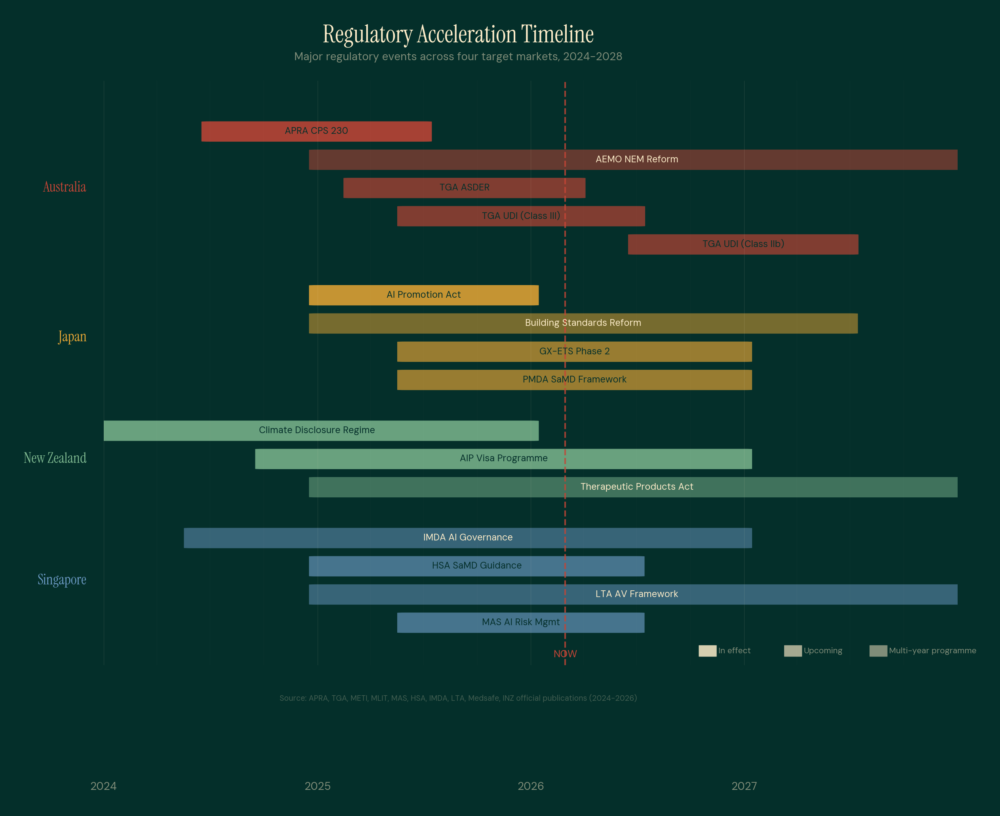
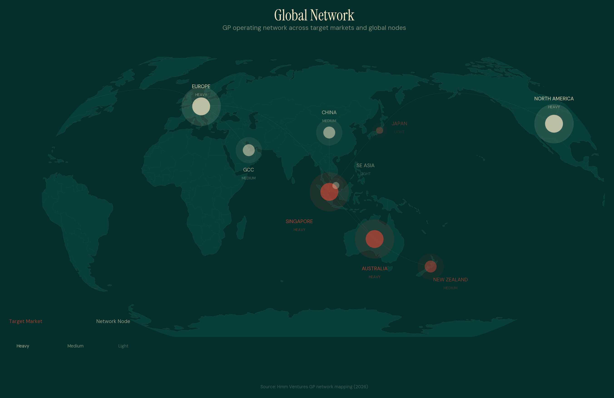

What remains valuable when software becomes free
What remains valuable when software becomes free
Something broke in software in 2022. Not a correction. A structural repricing of what software, by itself, is worth.
Public SaaS valuations compressed roughly 80% from their 2021 peak. The median EV/NTM Revenue for tracked public SaaS sits at 3.4x as of early 2026. That compression had nothing to do with bad companies. The market repriced what software moats are worth in a world where software itself is becoming free to produce.
Source: Clouded Judgement, Meritech Capital (Feb 2026)AI models that can replicate software functionality at near-zero marginal cost are the equivalent of a massive new entrant arriving in every software market simultaneously.
The pattern repeats every time. The barrier to competition disappears. New entrants price aggressively. Margins collapse. The industry consolidates.
The question is not whether software moats are eroding. The question is: what replaces them?
SaaS Median EV/NTM Revenue
≈80% compression
Source: Clouded Judgement SaaS Index (Feb 2026) Clouded Judgement SaaS Index tracks 80+ public SaaS companies
Regulation is the one thing AI cannot compress. A government approval takes as long as a government approval takes. A regulator issues a licence when they decide to issue it. No language model can generate a compliance certification.
Two mechanisms create durable moats in regulated markets:
The product requires a government approval that takes 12–36 months and costs $500K–$5M to obtain. Once obtained, every competitor must start from zero.
The buyer is legally required to purchase compliant solutions. Non-compliance carries financial penalties, licence revocation, and reputational damage. The switching cost is legal, not financial.
Temporal Monopoly
A company obtains regulatory approval that takes 12–36 months and costs $500K–$5M. While they were obtaining it, the market was effectively closed.
After obtaining it, they have 12–36 months before any well-funded competitor can enter, assuming the competitor starts the process today. In practice, most competitors don't start until they see the first mover succeeding. The temporal monopoly compounds.
The FDA cleared 295 AI/ML medical devices in 2025 (median 142 days clearance time). Each company holds a temporal monopoly. No shortcut exists. The 2–3 years of pre-submission work (clinical studies, regulatory strategy, documentation) IS the moat.
Source: FDA (2025)
Compliance Compulsion
The regulated buyer (bank, hospital, government agency) does not choose compliance vendors casually. They choose under legal obligation, where choosing wrong includes regulatory penalties, licence revocation, and reputational damage.
The switching cost is legal, not just financial. Removing an embedded compliance vendor requires regulatory notification, system replacement, documentation of the transition for auditors, and in many cases approval from the regulator.
The compliance software market grows from $40.8B (2026) to $74.1B by 2031 at 12.7% CAGR. Every new regulation creates a new procurement cycle.
Source: MarketsandMarkets (2026)
GDPR crystallised in 2018. It created a $15 billion compliance services market.
Source: Grand View Research (2024)The Dodd-Frank Act generated an $80 billion regulatory technology market.
Source: Boston Consulting Group (2024)Waymo's decade in California's AV framework became a competitive moat that prevents competitors from entering.
Source: CA DMV public filings (2024)
As AI capability accelerates exponentially, regulatory activity across all three markets is simultaneously increasing. The intersection of these two trends is where the thesis lives.

8,791 funded startups in Hmm's dataset. TGA, APRA, and AEMO driving active regulatory calendars.
Source: Hmm Ventures proprietary dataset (2026)World's fastest-aging population. AI Promotion Act, Building Standards Act reforms, PMDA medical device pathways.
Source: MLIT, METI official publications (2025)Lowest-barrier entry for medical devices in the OECD. No premarket approval for SaMD.
Source: Medsafe regulatory framework (2025)

These are not emerging markets. They are OECD economies with mature regulatory frameworks, rule of law, and institutional capital markets.

10 years across compliance, venture capital, and commercial growth in regulated markets. Paddle, Skalata Ventures, GoodFit. Operating networks spanning Australia, Singapore, Japan, and New Zealand with deep connections into Europe, the US, and the GCC.
Regulated-sector companies in these markets have produced meaningful exits. The regulatory moat translates directly into acquisition premiums.
Every thesis has objections. Here are the four most common, and why they actually strengthen the case.
The slowness IS the moat. NZ has no premarket approval for SaMD, so you can launch immediately. Singapore MAS has sandbox approvals in 3–6 months. Different markets, different speeds. The thesis does not require fast regulation. It requires regulation that exists and takes time for competitors to work through.
Source: Medsafe, MAS official guidance (2025)AI speeds approvals. The FDA clearance median fell to 142 days. But faster moat formation does not mean eroded moats. The requirement to obtain approval does not disappear. If anything, faster processing means the first movers who file first capture their temporal monopoly sooner.
Source: FDA (2025)This IS the exit thesis. Strategic acquirers pay premium multiples for pre-built regulatory infrastructure because the alternative is buying time. Payapps → Autodesk at ~$390M. Volpara → Lunit at ~$193M. The regulatory moat is exactly what makes these companies acquisition targets.
Source: Autodesk, Lunit public announcements (2023-2024)Regulated software trades at 14–17x EV/Revenue vs 5.1x SaaS median. Biotech reaches $1.6–2.2B valuations at Phase III with zero revenue. Markets price regulatory milestones, not just revenue. The valuation inflection comes at approval, not at first dollar earned.
Source: Pitchbook, Bain Capital (2025)The thesis is live. The fund is forming.
For institutional enquiries about Hmm Fund I, leave your details below.
Or reach out directly: wt@hmm.ventures
Regulation-first seed investing across AU, JP, NZ